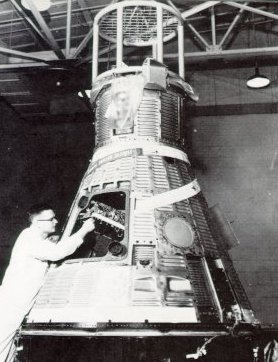
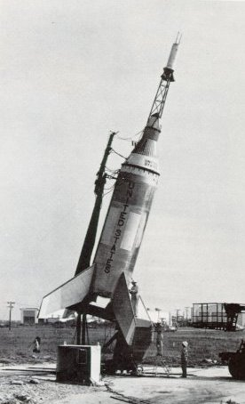
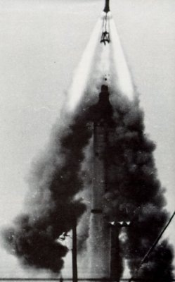
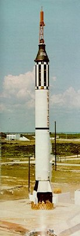
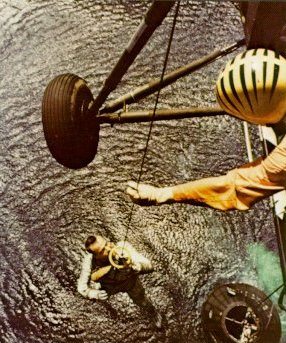
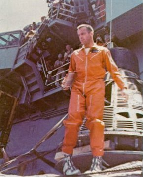
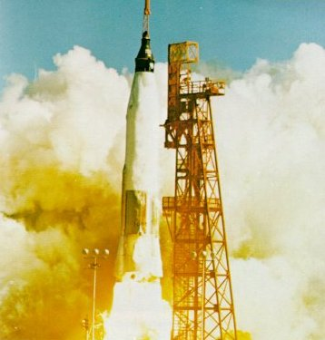
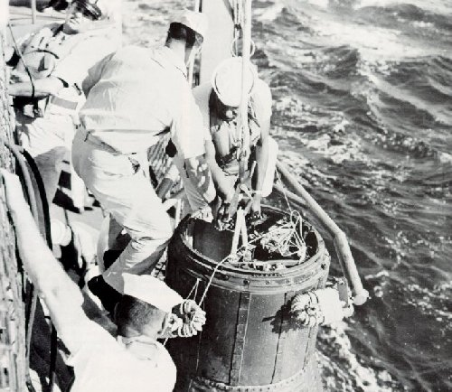

|  | Tiny one-man spacecraft -then called capsules- orbited the Earth in the Mercury program. They were checked out in a hangar at Cape Canaveral before being hoisted up and mated with a launch vehicle. Heat-resistant shingles covered the afterbody. |
|  | Boiler plate models (below) of escape tower and spacecraft were tested with Little Joe boosters at Wallops Station. Little Joe could briefly deliver up to 250,000 pounds of thrust from eight solid-fuel rockets. These launches were in 1959 and 1960. |
|  | Maximum public embarrassment in the Mercury program occurred in the inadvertent "tower flight". A circuit quirk cut off the Redstone's engines inches after liftoff. It was just enough to trigger the escape sequence. The engineers could explain it, but the public inevitably wondered if we were really ready to send a man safely into space. |
|  | Redstone rocket had launched Freedom 7. It reached top speed of 5180 miles an hour on 302-mile trip. Astronaut and capsule both landed in fine shape. Three weeks later President Kennedy proposed that U.S. astronauts go to the Moon in next decade. |
|  | The first suborbital spaceflight of Project Mercury ended happily when a U.S. Marine helicopter recovery team plucked astronaut Alan B. Shepard, Jr., out of the sea to fly him to the carrier Champlain on May 5, 1961. |
|  | Shepard reached 116.5-mile altitude on a 15-minute 22-second flight down the Atlantic Missile Range, and found being weightless for 5 minutes pleasant. |
|  | John Glenn rounded the Earth three times in Friendship 7, enjoyed his February 20, 1962, encounter with zero g, and wished his capsule were glass so that he could see more. Operations rnen on ground feared the heat shield was not locked in place. Glenn, too, had nervous moments and splashed his spacecraft into Atlantic 40 miles short of the projected area. Difficulties in controlling his vehicle intensified engineers' drive for perfect performances. |
|  |
| A destroyer picked up Glenn's capsule in 17 minutes. He skinned his knuckles blowing the hatch, and said that "it was hot in there". He had lost weight but doctors' exhaustive tests showed no adverse effects from his 4-hour 22-minute flight. City after city feted Glenn, and his capsule was put in the Smithsonian Institution near the Wright brothers' airplane. |